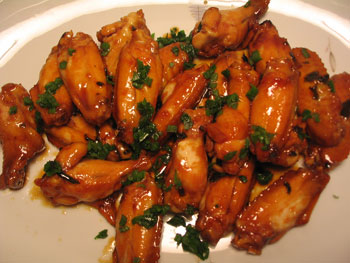

Man food: Lamb meatballs and chicken wings
This was a weekend of man food. On Saturday night, Lauren came for dinner and we enjoyed delicious Braised Sicilian lamb meatballs from Chef Michael White. I used golden raisins and panko, and they came out salty, sweet, and tender, although not worth photographing.
Today Bianca and Joe came over to watch March of the Penguins (we all suffered a cuteness overload), and I made my first ever batch of wings! They were called Sticky honey-soy chicken wings, from Tyler Florence, some Food Network chef who Carly adores.

Joe, a bonafide straight man, told me they were best wings he’d ever eaten. The only snafu was that I forgot to dry the wings after marinating them—I put them right into the frying oil and honey, which prevented them from crisping much. Nevertheless, they were addictive and pleasantly sticky, as promised in the recipe title.
Comments
those wings look amazing!!
i assume you saw this already?
http://www.nytimes.com/2006/01/22/magazine/22food-1.html
No but I will try those recipes! I’m fresh out of cookies and hungry for more. Thanks honey.
Try the wings! They couldn’t be easier.
I knew Tyler wouldn’t disappoint!
Add a comment